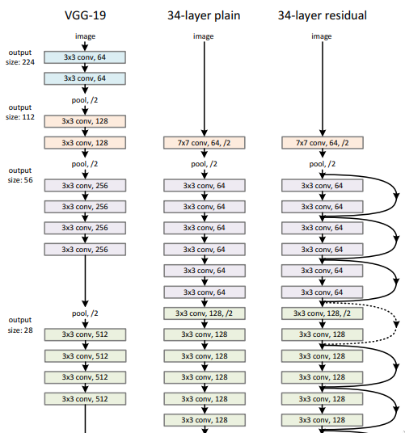
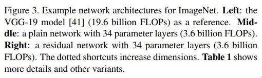

Paper
- Title: Deep Residual Learning for Image Recognition
- Authors: Kaiming He, Xiangyu Zhang, Shaoqing Ren, Jian Sun
- Link: https://arxiv.org/abs/1512.03385
- Year: 2015
What
- They propose a residual learning framework which eases the training of deep networks.
- ResNet 8x deeper than VGGNet, with 152 layers, has significantly less parameters and performs better in ImageNet dataset.
- Ensemble of ResNets achieve 3.57% error on ImageNet test dataset.
- Deep networks learn more enriched low/mid/high level features as we increase the depth of the network.
- Recent evidence reveals that this is not the case as the training error increases as we increase the layers.
- This degradation is not caused by overfitting but rather by deep networks which are hard to optimize.
- They argue that deeper models should produce error rates no higher than their shallower counterpart as the smaller networks' solution space is a subspace of the original networks' solution space and the stacked layers should at least learn the identity mappings.
- So instead of hoping that the network would learn the identity mappings they
explicitly reformulate the
original function to
F(x) + x(skip connections), wherexis the output of one of the previous layers. - They hypothesize that it is easier to optimize the residual mapping.


How
-
Model Overview
- They reformulate the original function
H(x) = F(x)toH(x) = F(x) + xas hypothesized. - If the identity mappings are optimal then the network can just drive the layer weights to 0.
- Skip connections can be used in both fully connected and convolutional layers.
- They reformulate the original function

-
Model Architecture
- Skip connections are made b/w 2 or 3 layers.
- They don't see any improvements for 1 layer skip connections, i.e
(W * x) + x. - If the dimensions of the
F(x)andxdon't match, then they propose a few methods to match them:- Add zero padded entries for the extra dimensions(no extra parameters).
- Use
1x1convolutions with matching dimensions(extra parameters).
- Batch Normalization is used right after convolution and before activation function.
- ImageNet model specifics:
- Learning rate = 0.1 and is divided by 10 when the error plateaus.
- Weight decay of 0.0001 and a momentum of 0.9.
- He initialization is used.
- Mini-batch of size 256.
 
-
Training/Experiments
- Models are trained on the 1.28 million training images from ImageNet which has 1000 classes.
- They train a bunch of models with 18, 34, 50, 101, 152 layers.
- They experiment 3 different ways to match dimensions b/w residual layers: 1. (A) Zero-padding shortcuts. 2. (B) Projection shortcuts(1x1 convs) are used for increasing dimensions. 3. (C) All shortcuts are projections.
out of which (B) works the best. - They also explore > 1000 layer network which performs worse than their 110 layer network, they argue that this is because of overfitting as both models have same training error.

-
Results
- They have no problem optimizing very deep networks(1000 layers).
- Activation signals are low compared to other "plain" networks.
- They also generalize well on other recognition tasks such as object detection.
- The plain networks error rate goes up from 27.94% to 28.54% as the number of layers increased from 18 to 34 but in the case of ResNets it decreases from 27.88% to 25.03% for the same.

Related Material
- Crisp and compact explanation - ResNet Explained! - Henry AI Labs
- Detailed walkthrough - Deep Residual Learning for Image Recognition (Paper Explained) - Yannic Kilcher
- The age old argument on where to BN
- Ian Goodfellow on why BN works